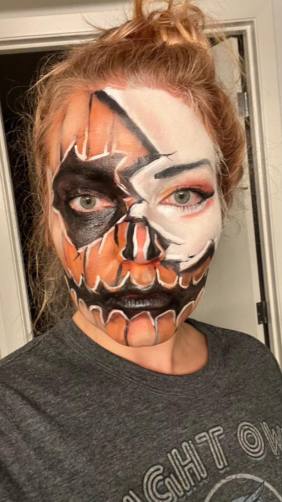

Michelle Cuppens

Summary
Energetic, flexible team player who loves working with cross-functional teams to help create and improve global products. Thrives in a fast- paced environment and is always eager to take on a new challenge. Extensive experience working with taxonomies and localization.
Education
- MSc. Economics | 2010 - 2011 | Tilburg University
- BSc. Economics | 2007 - 2010 | Tilburg University
Work experience
Product Analyst | Glassdoor
- Defining key metrics and reporting on international
market performance.
- App installs
Associate Product Analyst | Glassdoor
- daily localization tasks.
- App installs
Skills
- analytical skills: ⭐️⭐️⭐️⭐️⭐️
- localizaton: ⭐️⭐️⭐️⭐️
Other